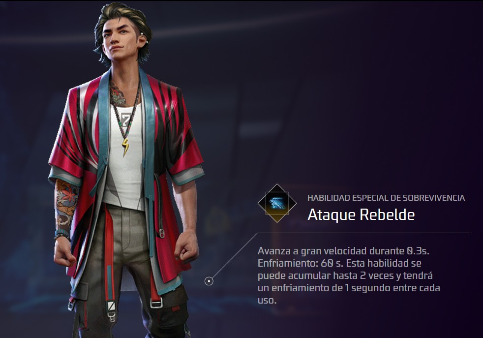

Los combos de habilidades son importante
por eso veremos COMBOS DE HABILIDADES
SKYLER

Esta es una habilidad activa
ESTA HABILIDAD LIBERA UNA ONDA SONICA QUE DAÑA PAREDES GLOO
ES MUY UTIL EN EL CASO DE QUE EL ENEMIGO ESTUVIERA ENCERRADO
O QUE TU POR ACCIDENTE QUEDES ENCERRADO
TATSUYA
Esta es una habilidad activa
ESTA HABILIDAD TE HACE AVANZAR A GRAN VELOCIDAD DURANTE 0.3S
ES MUY UTIL EN EL CASO DE QUERER ESCAPAR DE UN ENEMIGO O DE LA ZONA
O TAMBIEN PUEDES HACER TACTICAS Y DESPISTAR AL ENEMIGO
HOMER

Esta es una habilidad activa
ESTA HABILIDAD LANZA UN DRON HACIA EL ENEMIGO MAS CERCANO DENTRO DE LA DISTANCIA DE 100 MRTROS
ES MUY UTIL EN EL CASO DE NO ENCONTRAR UN ENEMIGO
O PARA QUE NO TE SORPRENDAN Y ESTES AL TANTO